PARKING BRAKE ASSEMBLY > DISASSEMBLY |
| 1. REMOVE REAR WHEEL |
| 2. DISCONNECT REAR DISC BRAKE CYLINDER ASSEMBLY LH |
| 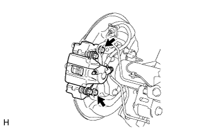 |
Remove the 2 bolts and disconnect the rear disc brake cylinder.
| 3. REMOVE REAR DISC |
| 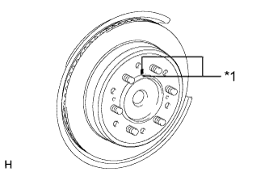 |
Place matchmarks on the rear disc and axle hub if planning to reuse the disc.
| *1 | Matchmark |
| 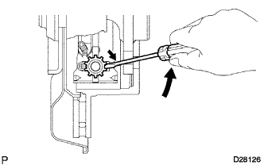 |
Turn the shoe adjuster until the disc turns freely, and then remove the disc.
 | Shoe Adjuster Contracts |
 | Shoe Adjuster Expands |
| 4. REMOVE PARKING BRAKE SHOE RETURN TENSION SPRING |
| 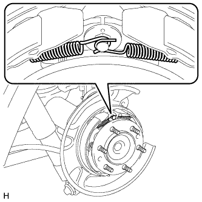 |
Remove the 2 parking brake shoe return tension springs.
| 5. DISCONNECT NO. 1 PARKING BRAKE SHOE ASSEMBLY LH |
| 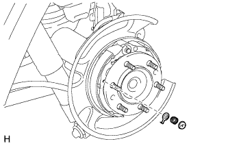 |
Remove the parking brake shoe hold down spring cup and parking brake shoe hold down spring to disconnect the No. 1 parking brake shoe assembly from the backing plate.
| 6. REMOVE PARKING BRAKE SHOE STRUT LH |
| 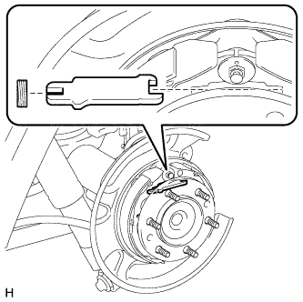 |
Remove the parking brake shoe strut LH and parking brake shoe strut compression spring.
| 7. DISCONNECT NO. 2 PARKING BRAKE SHOE ASSEMBLY LH |
| 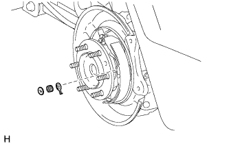 |
Remove the parking brake shoe hold down spring cup and parking brake shoe hold down spring to disconnect the No. 2 parking brake shoe assembly from the backing plate.
| 8. REMOVE PARKING BRAKE SHOE ADJUSTING SCREW SET |
| 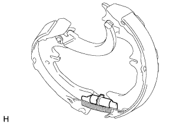 |
Remove the parking brake shoe adjusting screw set.
| 9. REMOVE NO. 1 PARKING BRAKE SHOE ASSEMBLY LH |
| 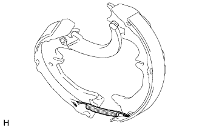 |
Disconnect the parking brake shoe return tension spring to remove the No. 1 parking brake shoe assembly.
| 10. REMOVE PARKING BRAKE SHOE RETURN TENSION SPRING |
| 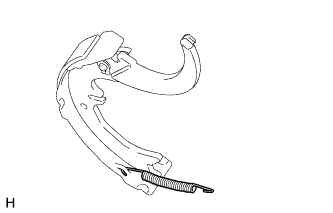 |
Remove the parking brake shoe return tension spring from the No. 2 parking brake shoe assembly.
| 11. REMOVE NO. 2 PARKING BRAKE SHOE ASSEMBLY WITH PARKING BRAKE SHOE LEVER |
| 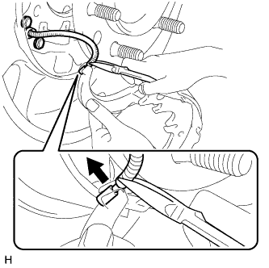 |
Using needle-nose pliers, disconnect the No. 3 parking brake cable assembly from the parking brake shoe lever as shown in the illustration.
| 12. REMOVE PARKING BRAKE SHOE LEVER |
| 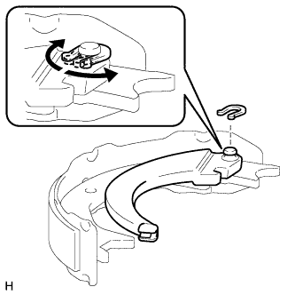 |
Remove the C-washer, shim and parking brake shoe lever from the No. 2 parking brake shoe assembly as shown in the illustration.
| 13. REMOVE PARKING BRAKE SHOE HOLD DOWN SPRING PIN |
Remove the parking brake shoe hold down spring pin (for front side).
Remove the parking brake shoe hold down spring pin (for rear side).